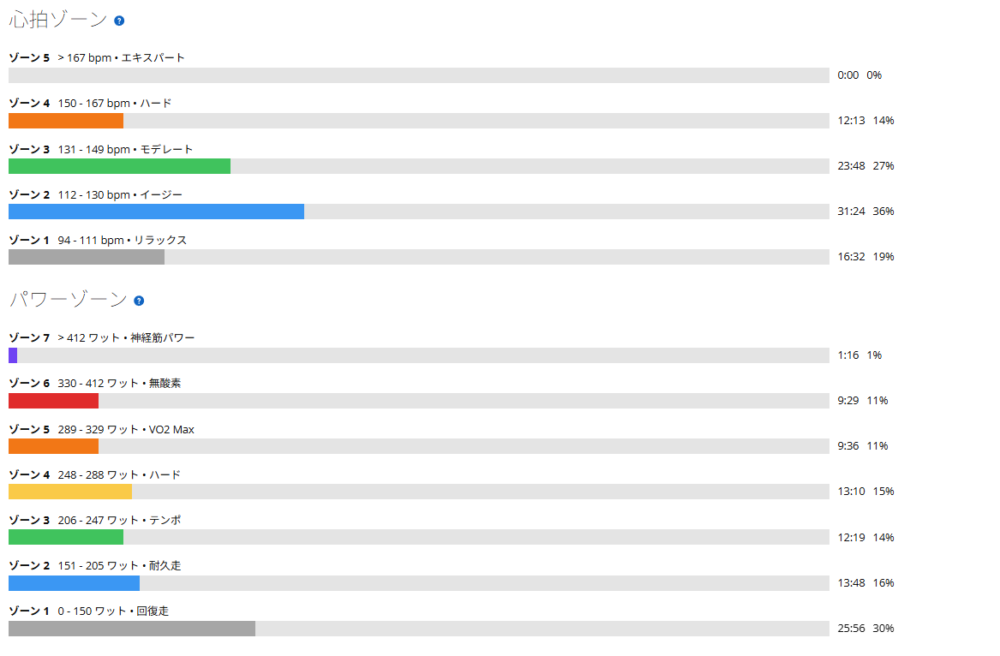

同じ317Wで13秒速い。今さら自分の機体の使い方を覚えている
昨日はローラーで20分×3。255W、254W、256W。数字だけならきれいに揃ったものの、3本目は10分でやめようかと思うくらいにはきつかった。その翌日なので、今日は細かいメニューを決めず、いつもの太平方面を普通に走ることにした。
スタートしたときの脚は「これ、今日は踏めないかな？」という感じ。昨日の60分が残っているような重さがあった。ところが、最初の峠に入ってからはそんなことをほとんど感じなくなった。走り出す前の感覚と、実際に負荷を掛け始めてからの身体が違う。最近は単純にパワーが上がったというより、身体そのものの耐久値が少し上がってきたような気がする。

普通に走ったつもりが、普通ではなかった
- 全体40.69km / 1時間25分41秒 / 獲得477m
- 負荷平均196W / NP250W / IF0.910 / TSS117.6
- 心拍・回転平均127bpm / 最大165bpm / 平均84rpm
- 前半の踏みどころ1分59秒 334W / 2分05秒 365W / 50秒 410W
「今日は太平を普通に走ろう」くらいの気持ちだったのだが、終わってみればNP250W、IF0.910、TSS117.6。全然ゆるくない。前半に上の3区間を入れて、その後に太平へ入っている。
昨日あれだけローラーで苦しんだ割には、走り始めてしまえば普通に踏めている。スタート時に脚が重くても、それだけでその日の状態を判断しない方がいいのかもしれない。
太平は7分04秒・317W。2か月前と同じ出力で13秒速い
- 今日の太平7分04秒 / 平均317W / 心拍149〜164bpm / 89rpm
ここが今日いちばん面白かった。過去の記録を並べてみると、こうなる。
- 6月23日7分17秒 / 317W
- 7月09日7分15秒 / 316W
- 7月30日7分12秒 / 322W
- 8月17日6分58秒 / 330W
- 今日7分04秒 / 317W
6月23日がまったく同じ317Wで7分17秒。今日は同じ出力で13秒速い。7月9日の316Wと比べても11秒速い。
もちろん外なので、風や気温、路面など条件は毎回違う。「同じパワーで13秒速くなった＝全部ペダリング改善のおかげ」とは言えない。ただ、2か月かけて同じ出力のタイムが少しずつ縮んでいるのは事実である。
「こう使うのか」。今さら機体の操作方法を覚えている
最近、自分の中で少し変わってきた感覚がある。身体の使い方が、ほんの少し分かってきた。脚だけで踏もうとするのではなく、腰まわりを安定させて、臀部も使いながら力を伝える。上半身も必要以上に固めない。ケイデンスについても、何rpmが正解と決めるのではなく、そのとき必要な出力に合わせて使い分ける。
この感覚を何かに例えられないか考えていたら、妙にしっくり来るものがあった。『鉄血のオルフェンズ』で三日月が戦いながら太刀の使い方を理解して、「こう使うのか」と急に扱いが変わるような感覚である。筋力が突然増えたわけではない。ただ、身体と自転車の使い方が少しだけ分かってきた。
別に昨日から今日で脚力が突然上がったわけではない。FTPが一晩で何十Wも増えるわけでもない。同じ身体、同じ自転車なのに「あれ？ こうやって力を掛ければいいのか？」という瞬間が少しずつ増えている。自転車に長く乗っているのに、今さら機体の操作方法を覚えている。我ながら遅い。でも、こういう発見があるから面白い。
まだ「完全に分かった」と言えるようなものではない。むしろ、ようやく入口が見えてきたくらいだと思う。
後半も263Wと295W。ゾーン5以上は20分21秒
- 太平のあと9分05秒 / 263W
- 信号待ちのあと6分40秒 / 295W
- パワーゾーンZ7 1分16秒 / Z6 9分29秒 / Z5 9分36秒 / Z4 13分10秒
- 心拍ゾーンZ4 12分13秒 / Z3 23分48秒 / Z5はゼロ
太平を終えたあとも完全に終わったわけではなかった。この2区間は信号を挟んでいるので、ひとつの連続走として見るものではない。それでも昨日20分×3をやった翌日に、ライド後半で6分40秒・295Wを出せているのは悪くない。今日のスタート時に「踏めないかも」と感じていたことを考えると、なおさらだ。

身体が疲れなくなったわけではない。昨日のローラーもきつかったし、今日だって楽ではない。ただ、疲労を抱えていても、身体が温まって動き始めれば出力できる。そういう意味での「耐久値」が以前より少し上がっているのかもしれない。
今日やってみて思ったこと
最近は60/30でケイデンスを変えてみたり、ローラーの持続走で疲れてから低ケイデンスを使ってみたり、意図的にいろいろな踏み方を試している。一つ一つは小さな実験だ。でも、それらが少しずつつながってきた感じがする。
高出力なら回転を使う。長い持続走で高回転が苦しくなれば、回転を落としてトルク側へ切り替える。外では身体全体を使って、自転車へ力を伝える。どれか一つが絶対的な正解というより、状況によって使い分ける。今日の太平の317W・7分04秒も、その途中経過なのだと思う。
速くなった理由をパワーの数字だけで説明できないところが、また面白い。
次に見るポイント
- 2日間の負荷昨日105.8＋今日117.6で合計223.4。この積み方を続けられるか
- 再現性次の太平で317W前後をもう一度出し、7分04秒が偶然でないか見る
- 60/3090〜95rpm付近で350〜365Wをきれいに揃えられるか
- 持続走255W前後の20分×3をもう一度再現できるか
- 身体の使い方今日感じた感覚が、次回も再現できるか